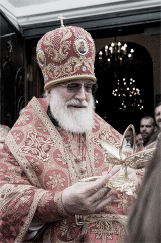
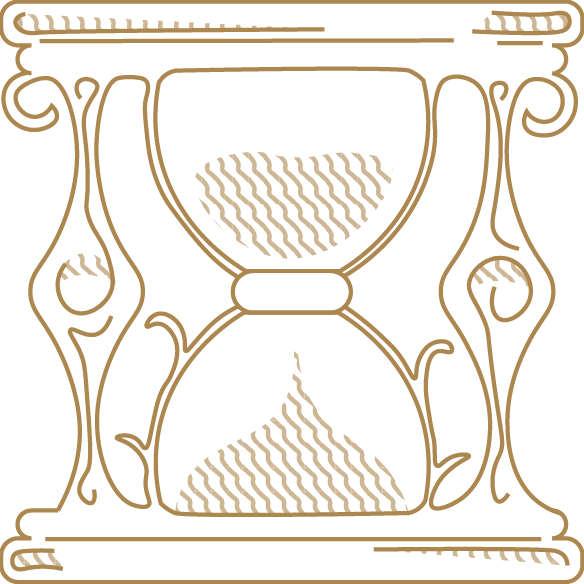
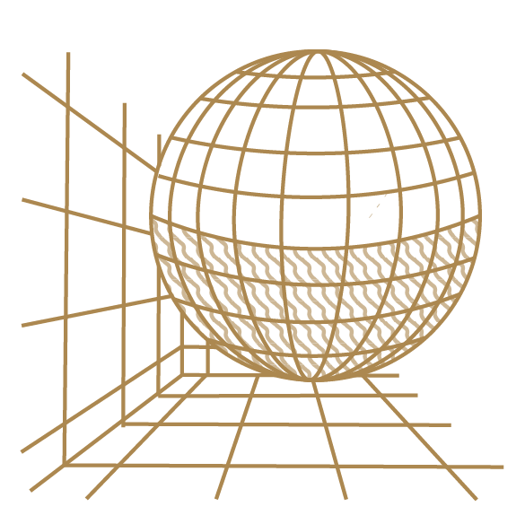

Уникальные изделия правостлавного искусства
Особое внимание уделяется реставрационным работам церковной утвари. Изготовленные эксклюзивные изделия по собственным чертежам, либо эскизам заказчика, могут стать бесценным подарком и украшением любой коллекции.
Перейти в каталогКовчег для святых мощей
С давних времен в христианстве считается, что каждая молитва, идущая от чистого сердца, будет услышана. И многочисленные чудеса сотворенные мощами святых тому подтверждение.
ПодробнееАвторская технология изготовления
В отличие от классического ковчега, где весь корпус отливается из металла, в нашей работе основу составляет темное дерево.
Безупречность, воплощенная в деталях
Узнать больше

Историческая точность
Глубокое изучение древнерусского наследия лежит в основе доскональности нашей работы

Современные технологии
Мы используем как старинные инструменты, так и новейшие технологии, вроде 3d-принтера